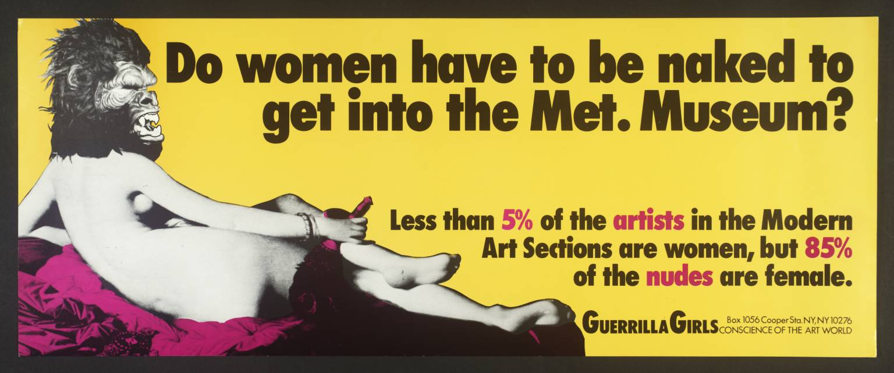
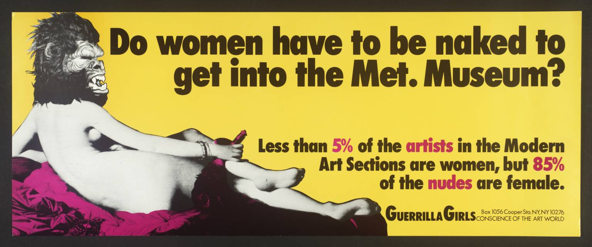

37 Years after the Guerrilla Girls ü¶ç, the Fight for Gender Representation in the Art World Continues


Since 1985, an anonymous New York City group of women who wear guerrilla masks and go by the name “Guerrilla Girls” have been fighting what they see as sexism in museums and the art market. One of the first things they did was to identify the lack of female representation at the Metropolitan Museum of Art where less than 5% of the artworks, at the time, were by women artists. It resulted in the iconic poster “Do women have to be naked to get into the Met. Museum?” which helped shift the cultural trajectory. Today, things appear more positive for women artists. But it is a minimal improvement that continues to be overshadowed by male dominance in major areas of the art world, whether in artistic creation or in some performing arts.
Gender inequality has slightly decreased in major NYC museums since the establishment of the Guerrilla Girls. For instance, artworks by women artists in MoMA’s art collection increased from 8 percent in 1985 to 18 percent in 2021. Since museums are one of the greatest trendsetters in the artworld, one would expect a similar trend regarding arts bought on the market. And indeed, an analysis of artworks being sold at one of New York’s biggest auction dealers, Christie's, shows this trend for women artists.
In 1985, female-art sold at prices about 46% lower than comparative pieces of art by male artists and below their estimated price. In contrast, pieces of art by male artists typically sold about 35 percent above valuations. Cut to 2021, and things are looking less dark, but not significantly different. Today, on average, people buy creations by female artists for 29x percent above the valuations and pieces of art for 46 percent above its valued price.
These findings suggest two things: customers are willing to pay more for art in general, and their willingness to pay is less dependent on the gender of the artist as compared to 37 years ago. However, it’s worth asking who value artworks since the price valuation influences the value potential buyers are willing to pay for artwork. If the estimated price wasn’t biased against women, perhaps potential buyers wouldn’t be as well. It needs to be born in mid, of course, that the valuators simply estimate the market price based on their experience and the history of previous sales of the various artists. In other words, the valuations they suggest do not reflect their personal opinions, but rather their experience with the position of the customers.
A study by the University of Oxford suggested that the quality of art does not depend on the artist’s gender but on people’s biases. In the study, the research showed participants hundreds of artworks and asked them to rate the artwork on a scale from one to ten depending on how much it appealed to them from an artistic point of view. When participants didn’t know the gender of the artist behind the artwork, there was no difference in how they rated arts by male and female artists. However, when participants were told the artist’s gender before announcing their score, the average score for the pieces by female artists fell 20 percent below that of male-made art. The study concludes that art made by women “is sold for less solely because it’s made by women.”
This analysis also showed that the art market is becoming slightly less male dominated. Artworks by women increased from 4 to 12 percent between 1985 and 2021. But still, men continue to make up the vast majority and people who identify as non-binary are hardly included.
Art is notoriously difficult to value and it is widely recognized that factors such as taste play an important role in setting prices. However, multiple studies have made it clear that gender should not impact the quality of art. The observed price difference between genders simply reflects a bias towards women.
It’s summed up best by the NYT art critique, Greg Allen:
“Asking why women's art sells for less than men's elicits a long and complex answer, with endless caveats, entirely germane qualifiers and diverse, sometimes contradictory reasons. But there is also a short and simple, if unpopular, answer that none of those explanations can trump. Women's art sells for less because it is made by women”